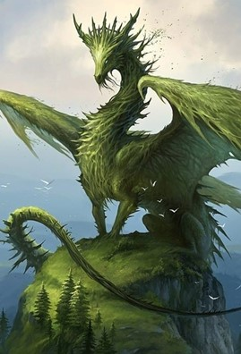

The project is a browser based, single player, role playing game. The game will be story focused, include both text, audio and puzzle interactions. There will be branching story lines dependent on user choice enhancing re-play ability. (Freed, 2014, Branching Conversation Systems and the Working Writer, Blog)
Browser based games aren’t unusual, however, they are often created with the aim of ‘time gating’ or selling access to content and items, either immediately or after a short time of play. The predatory leanings of developers can often lead to issues with users spending more money then they are able to, or being blocked from content when unwilling to spend money (Wirtz, 2021, Pay to Win Games are Taking Over: How Much Are You Willing to Pay?, Game Designing)(EnyGames, 2021, Pay to Win MMORPG )(Kelly, 2017, Kids who wasted thousands of dollars on gaming, Grunge).
The aim of this project would be to create a game open to anyone to play, with no cost required during the life of the story. Progression won’t be blocked by a required purchase.
With this goal in mind, it will be necessary to fund both the development, continued maintenance and update cycle using means other than cash shop (Slant, undated, What are the best ways to fund development of an independent game?)(DellaFave, 2014, How to fund your indie game, Game Development).
With this mind, the following have been identified as the most commonly accessed options:
Source
Payment options
Costs
Patreon
Duration: Unlimited/continuous
Method: per month or creation
May restrict access to some pages to patrons
Non binding goals may be set
3 plans:
Lite Subscription Plan (monthly)
Patreon Platform Fee: 5% + payment processing fees
A creator page
Patreon communication tools
Access to Patreon workshops
Pro Subscription Plan (monthly)
Patreon Platform Fee: 8% + payment processing fees
All the features in Lite, plus:
Analytics and insights
Ability to charge membership tiers
Special offers promotion tool
Creator-led workshops
Unlimited app integrations
Priority customer support
Premium Subscription Plan (monthly)
Patreon Platform Fee: 12% + payment processing fees
All the features in Lite and Pro, plus:
Dedicated partner manager
Membership merch
Fee: 5% - 12%
Payment fee: 2.9% + USD0.30 for donations over USD3
Stripe fee: 2.9% + USD0.30 for donations over USD3
Paypal fee: 5% + $0.10 for donations of $3 or less
Payout fees:
Direct Deposit: USD 0.25 fee per deposit
PayPal: USD 0.25 or 1% of the amount transferred capped at $20 per deposit for both US and international creators
Payoneer: $3 transfer fee per deposit (largely for international creators; will vary based on country/currency)
Kickstarter
All projects free to list for funding
On successful funding:
Kickstarter fee:
5% of total funds raised
Payment processing fees:
3% + AU$ 0.20 per pledge
Pledges under AU$ 10 have a discounted micropledge fee of 5% + AU$ 0.05 per pledge
Indiegogo
Free until launch
Post launch:
Crowdfunding
5% platform fees
2.9% + 0.30
third-party credit card fees for USD payout (additional third party fees may apply)
Indemand:
5% platform fees
2.9% + 0.30*
third-party credit card fees for USD payout (additional third party fees may apply)
Source
Advantages
Disadvantages
Government grant
Upfront funding
No requirement to repay
Varying terms dependant on State body
May lose ownership of IP
May include deadlines outside of developer control
Bank loan
Upfront funding
Repayment may be limited to interest only initially
Potentially large debt
Personal savings
Upfront funding
Loss of asset if game fails
Credit cards
Upfront/continual funding
Potentially large debt
Loss of credit ranking if unable to pay/game fails
Voluntary employees
No funds required for labour
Unreliable if not committed for full term of development
Early access
Staged funding
Free testing feedback
Possible high demands from users
Possible early negative feedback from bugs during development
Merchandise
Staged funding
Assists with marketing profile
High profile required for sales needed to fund
(Investigations, 2021, The Patreon Model: Pros, Cons, and Need-to-knows, Memberset) (Berning, undated, Kickstarter Pros and Cons, CrowdCrux) (Fees for Australia, 2022, Kickstarter) (Entrepreneur-friendly pricing, 2022, Affordable, easy, and secure, IndieGogo) (Film Victoria,circa 2021, Assigned Production Investment – Games).

(Pickell, 2021, The 7 Stages of Game Development, G2) (Jain, 2017, Game Development Lifecycle, LinkedIn)
There a several competing technologies that may be used in the development of a browser based game. The options vary dependant on the intended complexity of the end results.
It would be possible to create a functional games with simple graphics. These types of games are commonly created using (for example) HMTL5, Javascript and an open source graphics engine (Kent, 2020, A list of awesome games made with HTML5 and JavaScript, Ma-no).
However, it is preferable that the released game has the appearance of a more sophisticated product with the functionality of a non-browser game. It is possible to create a game that looks similar to those created using Javascript with an open source graphics engine, however, as Unity and Unreal both allow the use of more sophisticated graphics with little to no appreciable difference to the user experience, it seems logical to use an engine that will allow at the very least, the introduction of more sophisticated world graphics (Itch.io, 2022, Top HTML5 Games tagged Unreal Engine(100 results))( Itch.io, 2022, Top HTML5 Games made with Unity (58,117 results)
The choice of engine may be based on platforms where the game is to be released, or, level of skill the developer currently has as well as pricing/licensing structure and platform integrations.
The following is a comparison of the licensing, pricing and other related factors in the two major engines:
Unreal Engine 4
Unity
Cost
Free for development
Engine source code available
Unity Plus:
Small businesses and serious hobbyists get more functionality and training resources to power up their projects.
USD399 per year per seat
Prepaid yearly
(Less than USD200K of revenue or funds raised in the past 12 months)
Unity Pro:
Complete solution for professionals to create and operate successful games.
USD1,800 per seat
prepaid yearly
USD150 per seat
prepaid monthly
Unity Enterprise:
Success at scale for large studios with ambitious goals.
USD4,000 per month per 20 seats
Annual plan, paid monthly. Min 20 seats
Royalty structure
5% royalty on profits over USD1million.
Unity is royalty-free. There is no charge on on a per-title basis or require revenue sharing.
Support/Tutorials
Free support:
Documentation
Community support network
Premium fee based support:
Developer network
Unity support staff
Online classes in various subjects offered. 24/7 support. Personal classes also offered by topic.
Integrations
iOS
Android
VR, Linux
Windows PC
Mac OS X
SteamOS
HTML5
Xbox One
PS4
iOS
Android
Windows Phone 8
Tizen
Android TV
Samsung SMART TV
Xbox One & 360
Windows PC, Mac OS X
Linux, Web Player
WebGL
HoloLens
SteamOS
PS4
Playstation Vita
Wii U
Assets and models
Various free from developers
Various paid from marketplace
Various free and paid from Unity store
(Tristem, 2021, Unity vs. Unreal: Which Game Engine is Best For You? Udemy)(Epic Games, 2022, Unreal Engine)(Unity, 2022, The platform of choice for multiplayer hits)(Best free unreal engine assets, 2020, Pix-stacks)(Unreal Marketplace, 2022, Epic Games)(Unity Asset Store, 2022, Unity)
The following are additional tools that may be required during the development process:
Application
Comments
MS Office suite (or appropriate replacement)
For day to day office application requirements
Licencing cost for Office 365: [annual commitment]
Basic: AUD6.90 per user per month
Standard: AUD17.20 per user per month
Premium: AUD27.50 per user per month
Apps AUD12.00 per user per month
MS Project (or appropriate replacement)
For project planning and management
Licencing cost for Project
Plan 1 AUD13.70 per user per month
Plan 3 AUD41.20 per user per month
Plan 4 AUD75.50 per user per month
Yo Scenario
To assist with creating branching dialogue trees.
Free to use with optional donation.
(Office 365, Microsoft), (Project, Microsoft), (YoScenario)
As mentioned, the game will be story focused, with all activities the player takes part in contributing to world building. Each non player character will play a part in immersing the player in the Scenario game world. There will be multiple branches to the story, where each decision the player takes, every quest giver missed, changes both the journey and the conclusion. Replayability is key in the longevity of any role playing game and it is the prime consideration of this game’s design.
High fantasy 2.5D single player role playing game.
World name - Aran
City hubs: (Two on initial release)
Principal antagonist: Red Dragon Wyrmvyr
Stage 1 – Character creation
(Concept images follow - not our copyright - image sources at end)
The user will be able to select from a range of races, genders with as much scope to customise the appearance of their characters allowed by the engine/platform.
Each race will have base statistics that will affect their compatibility with particular classes. The concept is similar to Dungeons & Dragons but is not intended to be as prescriptive. (See The Gamer). The range of races and classes will be limited at launch but more may be added over time dependent on take up.
All first time users will go to character creation after loading.
Step 2 – Tutorial
(Concept images follow - not our copyright - image sources at end)
User character spawns into a small area with one non player character (npc). This npc (a cat) will explain the game mechanics and give a introduction to story. The cat acts as exposition here and during the game proper.
Sample image - not our copyright:
Step 3 – Game play
(Concept images follow - not our copyright - image sources at end)
On completion of the tutorial the user will spawn into their selected starting City. Race, class and city chosen will all affect user statistics and quest starting point.
Principality of Vidiel
Capital City - Aurybar:
Regional hubs:
Elhari Imperium
Capital City - Hilmeras:
Regional hubs:
Non player race samples (not our copyright):
Red dragon:

Green dragon:
Sea Serpents
The story will branch dependent on user choice and dialog options taken with non-player characters.
Exploration
As the game will be browser based, it is intended that any combat will be primitive in nature and not depicted in any great detail. The main focus of the game is intended to be story and most conflicts will arise from that. The game will release with two maps, with more to be added in stages. This won’t be an open world and travel will be depicted using a graphic rather than real time via characters walking between destinations.
It is intended that each map will hold 10 minor hubs with one major hub per map. The major hub will hold the inns (or resting place), which serves as the base for all player interactions with merchants and rest areas.
The minor hubs will be village/small town areas with quest givers, crafting stations and short term rest areas.
Combat
Combat will be rudimentary in nature as the focus is intended to be on story telling/crafting/solving problems through dialogue.
Crafting
A basic but complete crafting mechanic will be available. It will not be compulsory but will however work as an adjunct for users to create armour, weapons and other items that may be required during the game.
The crafting mechanics will include gathering resources, creating components and finally creating the final item. Local tradespeople in the minor hubs will offer recipes, tools and other items for sale for in game currency.
Currency
In game currency will be earned from quest givers and other non playable characters by completing quests, assisting with tasks, such as harvesting, animal husbandry and manual labour. Currency may also be earned while traveling between hubs from non player characters with puzzles and other problems the player might want to solve. It is intended that there will be sufficient ways to earn currency whether the user takes part in a facets of the game or not.
Future release goals:
Conclusion
There will be an initial learning curve while learning the Engine and how to create the HTML5 code with that. Unreal is a widely used engine and there are numerous resources available for learning, including those available from Epic Games, the create and owner of the engine. (see Unreal Engine).
Along with the engine, tools are available to assist in the creation and mapping of branching story writing (See Yo Scenario).
It should be reasonable to expect that with an initial time investment that the skills required to start the project can be gained. Once the project has started, the work itself will aid in the growth of further skills.
If the project is successfully launched and uptake by users is good, we can perhaps hope that we can demonstrate that good, free games can be developed without the need to prey on sometimes vulnerable users.